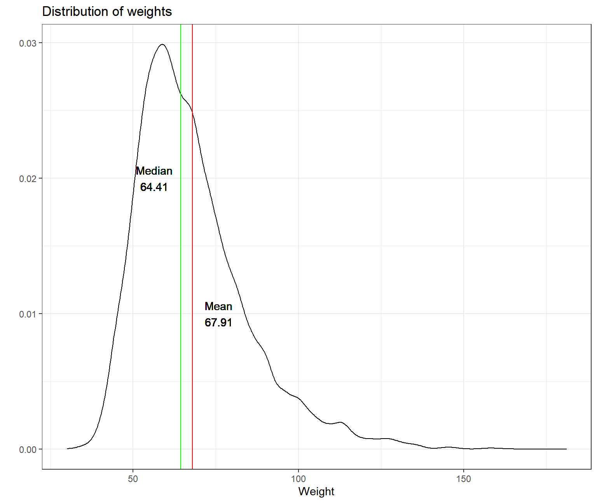
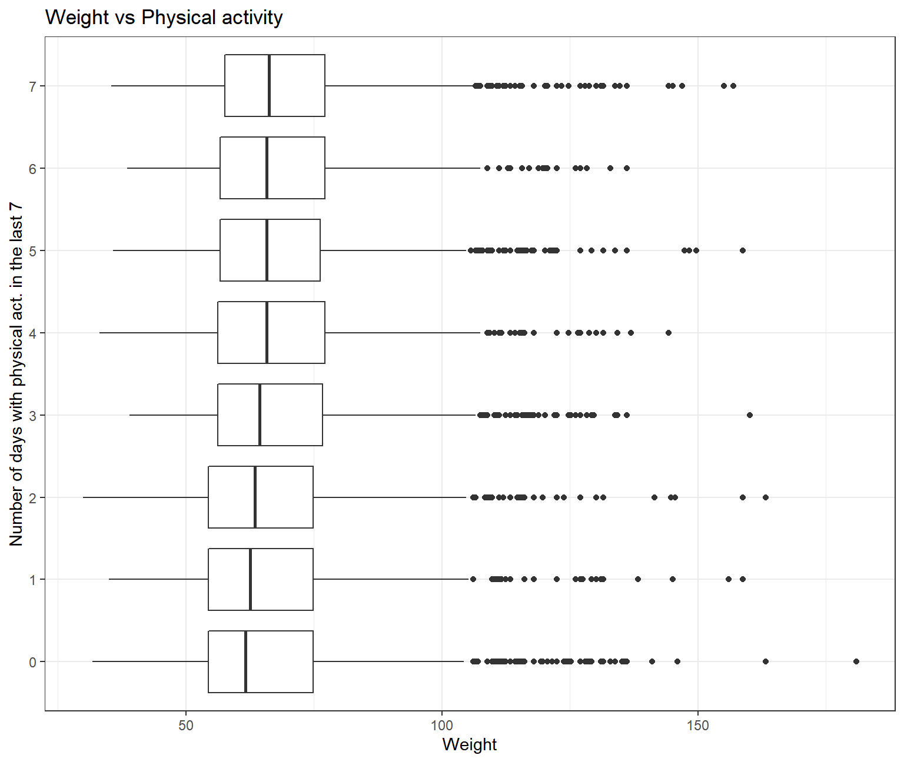
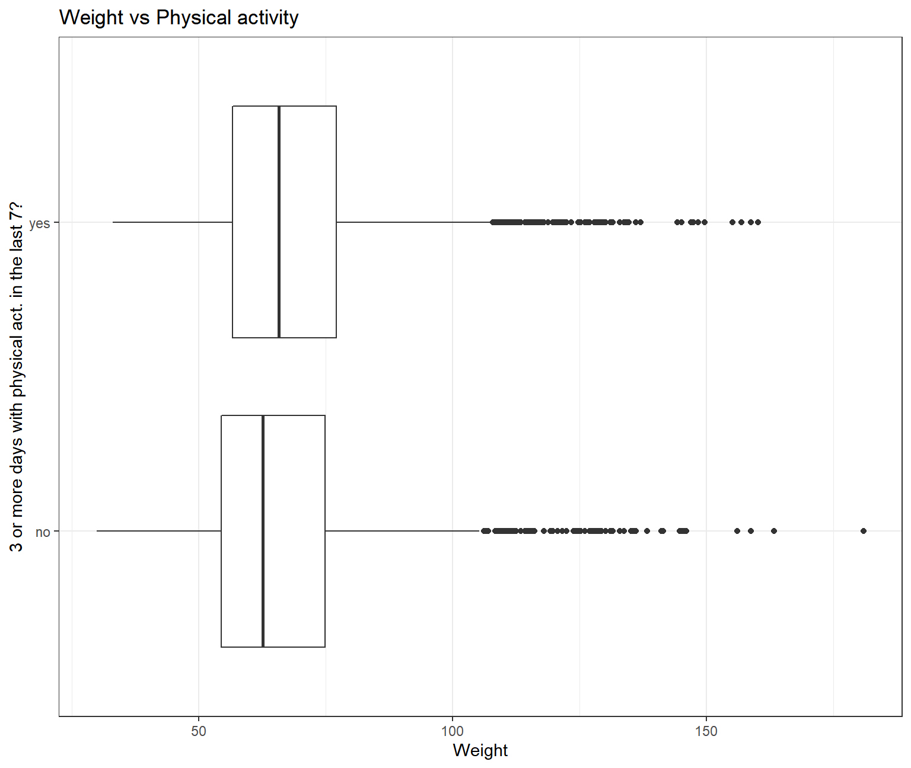
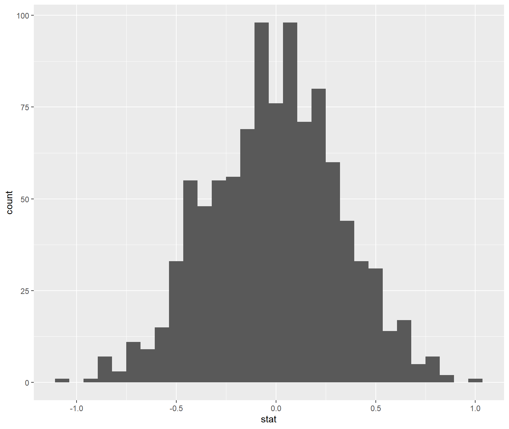
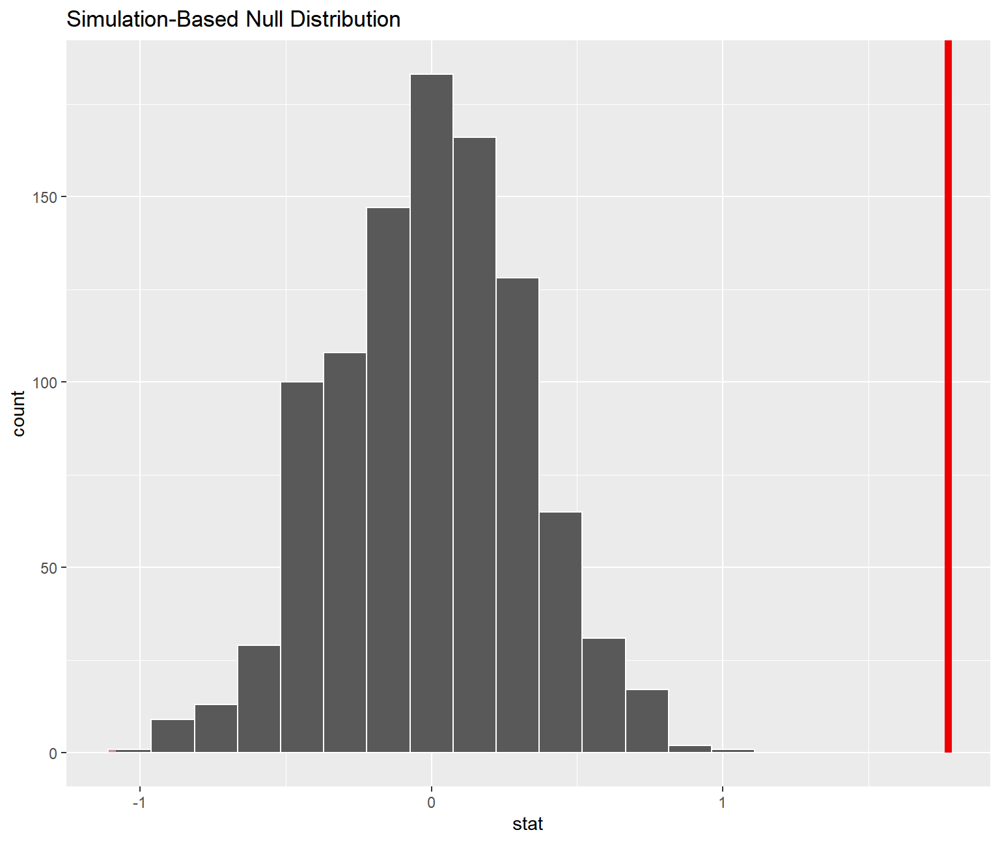

data(yrbss)
glimpse(yrbss)## Rows: 13,583
## Columns: 13
## $ age <int> 14, 14, 15, 15, 15, 15, 15, 14, 15, 15, 15...
## $ gender <chr> "female", "female", "female", "female", "f...
## $ grade <chr> "9", "9", "9", "9", "9", "9", "9", "9", "9...
## $ hispanic <chr> "not", "not", "hispanic", "not", "not", "n...
## $ race <chr> "Black or African American", "Black or Afr...
## $ height <dbl> NA, NA, 1.73, 1.60, 1.50, 1.57, 1.65, 1.88...
## $ weight <dbl> NA, NA, 84.4, 55.8, 46.7, 67.1, 131.5, 71....
## $ helmet_12m <chr> "never", "never", "never", "never", "did n...
## $ text_while_driving_30d <chr> "0", NA, "30", "0", "did not drive", "did ...
## $ physically_active_7d <int> 4, 2, 7, 0, 2, 1, 4, 4, 5, 0, 0, 0, 4, 7, ...
## $ hours_tv_per_school_day <chr> "5+", "5+", "5+", "2", "3", "5+", "5+", "5...
## $ strength_training_7d <int> 0, 0, 0, 0, 1, 0, 2, 0, 3, 0, 3, 0, 0, 7, ...
## $ school_night_hours_sleep <chr> "8", "6", "<5", "6", "9", "8", "9", "6", "...skim(yrbss)| Name | yrbss |
| Number of rows | 13583 |
| Number of columns | 13 |
| _______________________ | |
| Column type frequency: | |
| character | 8 |
| numeric | 5 |
| ________________________ | |
| Group variables | None |
Variable type: character
| skim_variable | n_missing | complete_rate | min | max | empty | n_unique | whitespace |
|---|---|---|---|---|---|---|---|
| gender | 12 | 1.00 | 4 | 6 | 0 | 2 | 0 |
| grade | 79 | 0.99 | 1 | 5 | 0 | 5 | 0 |
| hispanic | 231 | 0.98 | 3 | 8 | 0 | 2 | 0 |
| race | 2805 | 0.79 | 5 | 41 | 0 | 5 | 0 |
| helmet_12m | 311 | 0.98 | 5 | 12 | 0 | 6 | 0 |
| text_while_driving_30d | 918 | 0.93 | 1 | 13 | 0 | 8 | 0 |
| hours_tv_per_school_day | 338 | 0.98 | 1 | 12 | 0 | 7 | 0 |
| school_night_hours_sleep | 1248 | 0.91 | 1 | 3 | 0 | 7 | 0 |
Variable type: numeric
| skim_variable | n_missing | complete_rate | mean | sd | p0 | p25 | p50 | p75 | p100 | hist |
|---|---|---|---|---|---|---|---|---|---|---|
| age | 77 | 0.99 | 16.16 | 1.26 | 12.00 | 15.0 | 16.00 | 17.00 | 18.00 | ▁▂▅▅▇ |
| height | 1004 | 0.93 | 1.69 | 0.10 | 1.27 | 1.6 | 1.68 | 1.78 | 2.11 | ▁▅▇▃▁ |
| weight | 1004 | 0.93 | 67.91 | 16.90 | 29.94 | 56.2 | 64.41 | 76.20 | 180.99 | ▆▇▂▁▁ |
| physically_active_7d | 273 | 0.98 | 3.90 | 2.56 | 0.00 | 2.0 | 4.00 | 7.00 | 7.00 | ▆▂▅▃▇ |
| strength_training_7d | 1176 | 0.91 | 2.95 | 2.58 | 0.00 | 0.0 | 3.00 | 5.00 | 7.00 | ▇▂▅▂▅ |
Number_of_missing_weight <- count(yrbss,is.na(yrbss$weight))
Number_of_missing_weight[2,2] ## take the number of missing weight only## # A tibble: 1 x 1
## n
## <int>
## 1 1004temp <- yrbss%>%
filter(weight != is.na(weight)) ## eliminate NAs to calculate summary statistics
mean.weight <- mean(temp$weight)
median.weight <- median(temp$weight)
summary <- yrbss %>%
filter(!is.na(weight))%>%
summarise(mean_weight = mean.weight , min_weight = min(weight), max = max(weight), median_weight = median.weight, sd_weights = sd(weights))
summary## # A tibble: 1 x 5
## mean_weight min_weight max median_weight sd_weights
## <dbl> <dbl> <dbl> <dbl> <dbl>
## 1 67.9 29.9 181. 64.4 0.111ggplot(temp, aes(x= weight))+
geom_density()+
theme_bw()+
geom_vline(xintercept = mean.weight, size = 0.5, colour = "red") + #add mean line
geom_vline(xintercept = median.weight, size = 0.5, colour = "green")+ #add median line
geom_text(aes(x=mean.weight+8, label=paste0("Mean\n", round(mean.weight,2)), y=0.01))+
geom_text(aes(x=median.weight-8, label=paste0("Median\n", round(median.weight,2)), y=0.02))+
labs(title = "Distribution of weights", x="Weight", y="")
We are missing 1004 values for weight. Based on our graph, median weight of the participants is at 64.41kg, while mean weight is at 67.91kg.
temp <- yrbss %>%
filter(!is.na(physically_active_7d),!is.na(weight))%>%
group_by(physically_active_7d)
temp$physically_active_7d <- as.character(temp$physically_active_7d)
ggplot(temp, aes(x=weight, y=physically_active_7d))+
geom_boxplot()+
theme_bw()+
labs(title="Weight vs Physical activity", x="Weight", y="Number of days with physical act. in the last 7") >It seems that there is a positive correlation between weight and physical activity. High schooler’s that had below 2 days of physical activity seem to have the lowest weight on average, while those that had 5 and above usually had higher weights.
yrbss <- yrbss %>%
mutate(physical_3plus = ifelse(physically_active_7d >= 3, "yes", "no"))
yrbss %>% filter(!is.na(physical_3plus)) %>%
group_by(physical_3plus) %>%
summarise(count = n()) %>%
mutate(prop= count/sum(count))## # A tibble: 2 x 3
## physical_3plus count prop
## <chr> <int> <dbl>
## 1 no 4404 0.331
## 2 yes 8906 0.669physically_active_no = yrbss %>%
filter(physical_3plus == "no")%>%
summarise(count = n())
physically_active_total = yrbss %>%
filter(!is.na(physical_3plus))%>%
summarise(count = n())
prop.test(physically_active_no$count, physically_active_total$count)##
## 1-sample proportions test with continuity correction
##
## data: $ out of $physically_active_no out of physically_active_totalcount out of count
## X-squared = 1522, df = 1, p-value <2e-16
## alternative hypothesis: true p is not equal to 0.5
## 95 percent confidence interval:
## 0.323 0.339
## sample estimates:
## p
## 0.331temp <- yrbss%>%
filter(!is.na(physical_3plus))
ggplot(temp, aes(x=weight, y=physical_3plus))+
geom_boxplot()+
theme_bw()+
labs(title="Weight vs Physical activity", x="Weight", y="3 or more days with physical act. in the last 7?") >This boxplot confirms our previous considerations about the correlation between weight and physical activity. We notice that 25th percentile, median and 75th percentile are higher for the group that answered “Yes” to the question asked. It is clear that high schoolers that had 3 or more days of physical activity in the last week have higher weight on average than those who did not.
yrbss %>%
group_by(physical_3plus) %>%
filter(!is.na(physical_3plus)) %>%
summarise(mean_weight = mean(weight, na.rm = TRUE),
sd_weight = sd(weight, na.rm=TRUE),
count = n(),
se_weight = sd_weight/sqrt(count),
t_critical = qt(0.975, count-1),
margin_of_error = t_critical * se_weight,
lower = mean_weight - t_critical * se_weight,
upper = mean_weight + t_critical * se_weight
)## # A tibble: 2 x 9
## physical_3plus mean_weight sd_weight count se_weight t_critical
## <chr> <dbl> <dbl> <int> <dbl> <dbl>
## 1 no 66.7 17.6 4404 0.266 1.96
## 2 yes 68.4 16.5 8906 0.175 1.96
## # ... with 3 more variables: margin_of_error <dbl>, lower <dbl>, upper <dbl>There is an observed difference of about 1.77kg (68.44 - 66.67), and we notice that the two confidence intervals do not overlap. It seems that the difference is at least 95% statistically significant.
t.test(weight ~ physical_3plus, data = yrbss)##
## Welch Two Sample t-test
##
## data: weight by physical_3plus
## t = -5, df = 7479, p-value = 9e-08
## alternative hypothesis: true difference in means is not equal to 0
## 95 percent confidence interval:
## -2.42 -1.12
## sample estimates:
## mean in group no mean in group yes
## 66.7 68.4inferobs_diff <- yrbss %>%
specify(weight ~ physical_3plus) %>%
calculate(stat = "diff in means", order = c("yes", "no"))null_dist <- yrbss %>%
specify(weight ~ physical_3plus) %>%
hypothesize(null = "independence") %>%
generate(reps = 1000, type = "permute") %>%
calculate(stat = "diff in means", order = c("yes", "no"))ggplot(data = null_dist, aes(x = stat)) +
geom_histogram()
null_dist %>% visualize() +
shade_p_value(obs_stat = obs_diff, direction = "two-sided")
null_dist %>%
get_p_value(obs_stat = obs_diff, direction = "two_sided")## # A tibble: 1 x 1
## p_value
## <dbl>
## 1 0